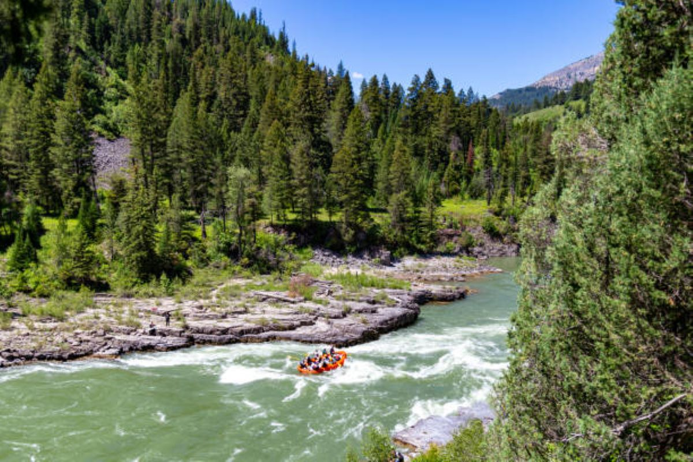
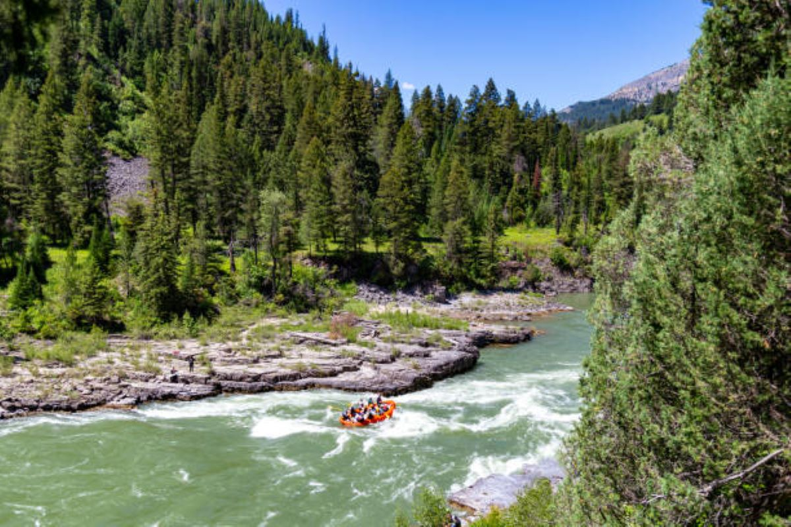

Thrilling and Fun!

PURPOSE To provide thrilling and unforgettable rafting experiences that connect people with nature and foster a sense of adventure. MISSION To be the leading provider of rafting adventures in the region by offering a wide range of trips, exceptional service, and experienced guides who prioritize safety and fun. At Rocky Mountail White Water Rafting, we believe that everyone should have the opportunity to experience the thrill of rafting. We are committed to providing safe, memorable and engaging trips that foster a sense of community and connection with nature. We believe in responsible stewardship of our wild rivers, and strive to leave the environment better than we found it. MOTTO "Experience the thrill, feel the rush, and make memories that last a lifetime."

 
